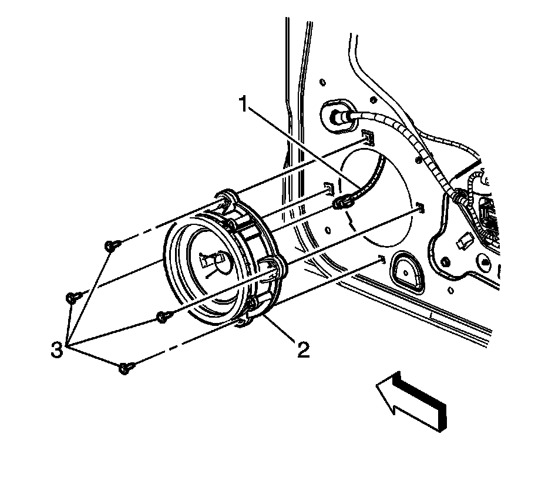

Radio Front Side Door Speaker Replacement
Radio Front Side Door Speaker Replacement
Removal Procedure
1. Remove the door trim panel. Refer to Front Side Door Trim Panel Replacement (Service and Repair) .

2. Disconnect the electrical connector (1).
3. Remove the screws (3) securing the speaker (2) to the door frame.
4. Remove the speaker from the door.
Installation Procedure
1. Connect the electrical connector.
2. Install the speaker onto the door frame.
Notice: Refer to Fastener Notice (Fastener Notice) .
3. Install the screws (3) securing the speaker (2) to the door frame.
Tighten the screws to 2 N.m (18 lb in).
4. Install the door trim panel. Refer to Front Side Door Trim Panel Replacement (Service and Repair) .